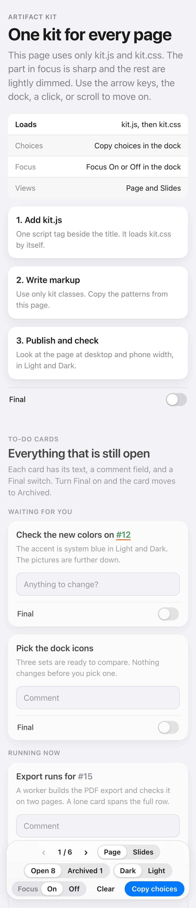
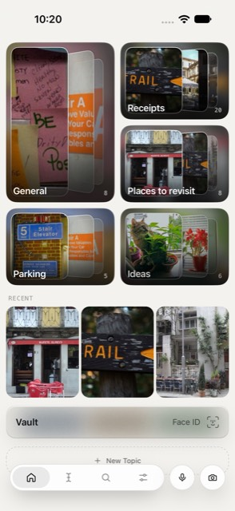
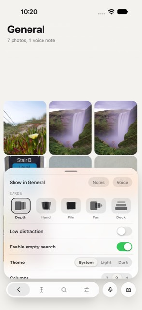
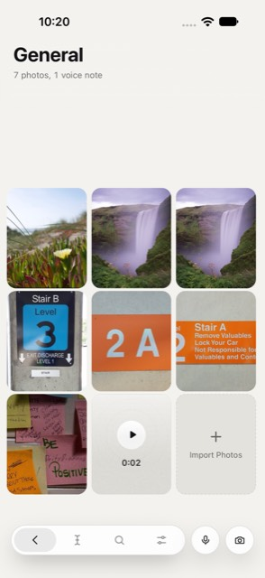
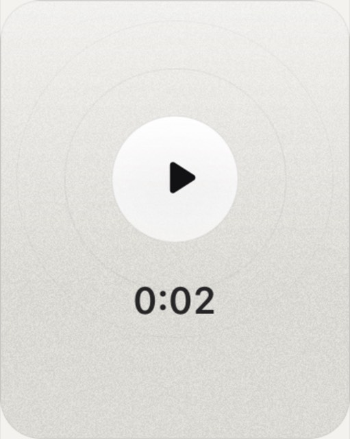

<title>Kit > example</title>
<meta name="claude:viewport-fit-sides" content="cover">
<script src="kit.js"></script>

<main class="k-wrap" data-kit data-mockup-toggle>

  <header class="k-part" data-part="Answer">
    <p class="k-kicker">Artifact Kit</p>
    <h1 class="k-title">One kit for every page</h1>
    <p class="k-lead">This page uses only kit.js and kit.css. The part in focus is sharp and the rest are lightly dimmed. Use the arrow keys, the dock, a click, or scroll to move on.</p>
    <div class="k-list" style="max-width:560px">
      <div class="k-row k-strong"><span>Loads</span><span>kit.js, then kit.css</span></div>
      <div class="k-row"><span>Choices</span><span>Copy choices in the dock</span></div>
      <div class="k-row"><span>Focus</span><span>Focus On or Off in the dock</span></div>
      <div class="k-row" title="Click or tap"><span>Views</span><span>Page and Slides</span>
        <div class="k-detail"><p>Same markup, two views. Add #slides to the address to open slides.</p></div></div>
    </div>
    <div class="k-steps">
      <div class="k-step"><b>1. Add kit.js</b><span>One script tag beside the title. It loads kit.css by itself.</span></div>
      <div class="k-step"><b>2. Write markup</b><span>Use only kit classes. Copy the patterns from this page.</span></div>
      <div class="k-step"><b>3. Publish and check</b><span>Look at the page at desktop and phone width, in Light and Dark.</span></div>
    </div>
  </header>

  <section class="k-part" data-part="To-do">
    <p class="k-kicker">To-do cards</p>
    <h2 class="k-h2">Everything that is still open</h2>
    <p class="k-hint">Each card has its text, a comment field, and a Final switch. Turn Final on and the card moves to Archived.</p>

    <p class="k-todo-head">Waiting for you</p>
    <div class="k-todos">
      <div class="k-group" data-group="To-do: colors" data-comment-only data-comment="Anything to change?">
        <div class="k-todo"><b>Check the new colors on <a class="k-ref" data-pop="12">#12</a></b><span>The accent is system blue in Light and Dark. The pictures are further down.</span></div>
      </div>
      <div class="k-group" data-group="To-do: icons" data-comment-only>
        <div class="k-todo"><b>Pick the dock icons</b><span>Three sets are ready to compare. Nothing changes before you pick one.</span></div>
      </div>
    </div>

    <p class="k-todo-head">Running now</p>
    <div class="k-todos">
      <div class="k-group" data-group="To-do: export" data-comment-only>
        <div class="k-todo"><b>Export runs for <a class="k-ref" data-pop="15">#15</a></b><span>A worker builds the PDF export and checks it on two pages. A lone card spans the full row.</span></div>
      </div>
    </div>

    <p class="k-todo-head">Arrives later</p>
    <div class="k-pending">The storage list comes here when the scan ends.</div>

    <h2 class="k-h2">Parked</h2>
    <p class="k-hint">A heading after a card opens a new section with a 32 px gap.</p>
    <div class="k-todos">
      <div class="k-todo"><b>Sync settings across Macs</b><span>Not now. It needs an account, and nobody asked for it yet.</span></div>
    </div>
  </section>

  <section class="k-part" data-part="Layout">
    <p class="k-kicker">Decided</p>
    <h2 class="k-h2">Settings sheet layout</h2>
    <p class="k-hint">Pick one panel, then add a comment. The Dark and Light switch in the dock changes the mockups only. This part starts finalized because its group has data-final (open Archived in the dock to see it).</p>

    <div class="k-group" data-group="Settings layout" data-keep data-final>
      <div class="k-options">

        <div class="k-option" data-option="Grouped list" data-recommended>
          <div class="k-phone" data-h="250"><div class="k-screen">
            <div class="k-m-title">Settings</div>
            <div class="k-m-list">
              <div class="k-m-li">Haptics<span class="k-m-sw on"></span></div>
              <div class="k-m-li">Theme<span class="v">System</span></div>
              <div class="k-m-li">Backup<span class="k-m-sw"></span></div>
            </div></div></div>
          <div class="k-list">
            <div class="k-row"><span>Rows</span><span>Label left, value right</span></div>
            <div class="k-row"><span>Height</span><span>3 rows, no scroll</span></div>
          </div>
        </div>

        <div class="k-option" data-option="Two columns" data-sub="Wide screens only">
          <div class="k-phone" data-h="250"><div class="k-screen">
            <div class="k-m-title">Settings</div>
            <div class="k-m-list">
              <div class="k-m-li">Theme<span class="v">System</span></div>
              <div class="k-m-li">Haptics<span class="k-m-sw on"></span></div>
              <div class="k-m-li red">Delete everything</div>
            </div></div></div>
          <div class="k-list">
            <div class="k-row"><span>Rows</span><span>Danger row last</span></div>
            <div class="k-row"><span>Height</span><span>3 rows, no scroll</span></div>
          </div>
        </div>

        <div class="k-option" data-option="Tabs on top">
          <div class="k-phone" data-h="250"><div class="k-screen">
            <div class="k-m-title">Settings</div>
            <div class="k-m-list">
              <div class="k-m-li">General<span class="v">Open</span></div>
              <div class="k-m-li">Backup<span class="v">Off</span></div>
              <div class="k-m-li">About<span class="v">1.4</span></div>
            </div></div></div>
          <div class="k-list">
            <div class="k-row"><span>Rows</span><span>One page for each tab</span></div>
            <div class="k-row"><span>Height</span><span>Short pages</span></div>
          </div>
        </div>

      </div>
    </div>
  </section>

  <section class="k-part" data-part="Options">
    <p class="k-kicker">Open choice</p>
    <h2 class="k-h2">Dock style</h2>
    <p class="k-hint">This part is still open. Turn on its Final switch, at the end of the part, to move it to Archived.</p>

    <div class="k-group" data-group="Dock style">
      <div class="k-options">
        <div class="k-option" data-option="Capsule" data-recommended>
          <div class="k-list">
            <div class="k-row"><span>Shape</span><span>Compact, rounded, blurred</span></div>
            <div class="k-row"><span>Width</span><span>Fits its buttons</span></div>
          </div>
        </div>
        <div class="k-option" data-option="Full-width bar">
          <div class="k-list">
            <div class="k-row"><span>Shape</span><span>Edge to edge</span></div>
            <div class="k-row"><span>Width</span><span>Whole page</span></div>
          </div>
        </div>
      </div>
    </div>
  </section>

  <section class="k-part" data-part="Pick many">
    <p class="k-kicker">Pick many</p>
    <h2 class="k-h2">Dock items</h2>
    <p class="k-hint">A group with data-multi lets each option toggle on its own. Copy choices lists every pick.</p>

    <div class="k-group" data-group="Dock items" data-multi>
      <div class="k-options">
        <div class="k-option" data-option="Dots" data-recommended data-sub="One dot for each part"></div>
        <div class="k-option" data-option="Focus switch" data-recommended data-sub="On or Off, remembered"></div>
        <div class="k-option" data-option="Clear" data-sub="Two clicks within 3 s"></div>
      </div>
    </div>
  </section>

  <section class="k-part" data-part="Option dots">
    <p class="k-kicker">Option dots</p>
    <h2 class="k-h2">Dots on the page itself</h2>
    <p class="k-hint">A blue dot has choices to pick. A green dot has only a comment field. The dock's arrows step through the blue dots, and Hide dots hides them all.</p>
    <div class="k-steps">
      <div class="k-step"><b>Page title</b><span>Large and left aligned, like a document.</span>
        <div data-dot="Page title"><div class="k-group" data-group="Page title"><div class="k-options">
          <div class="k-option" data-option="Left aligned" data-recommended data-sub="Reads like a document"></div>
          <div class="k-option" data-option="Centered" data-sub="Reads like a cover"></div>
        </div></div></div></div>
      <div class="k-step"><b>Footer note</b><span>One gray line under the last part.</span>
        <div data-dot="Footer note"><div class="k-group" data-group="Footer note" data-comment-only data-comment="Anything to change in the footer?"></div></div></div>
    </div>
  </section>

  <section class="k-part" data-part="Check">
    <p class="k-kicker">Check</p>
    <h2 class="k-h2">Audit result</h2>
    <p class="k-hint">Worst first. Each status is named once, in its group header.</p>
    <div class="k-cols">
      <div class="k-status k-red"><h3>Wrong (2)</h3><div class="k-list">
        <div class="k-row"><span>Play button</span><span>Centered by box, not by shape</span></div>
        <div class="k-row"><span>Photo caption</span><span>No space under the image</span></div>
      </div></div>
      <div class="k-status k-amber"><h3>Different but works (1)</h3><div class="k-list">
        <div class="k-row"><span>Dock</span><span>Wide bar, not a capsule</span></div>
      </div></div>
      <div class="k-status k-blue"><h3>To do (1)</h3><div class="k-list">
        <div class="k-row"><span>Android</span><span>Same sheet, same motion</span></div>
      </div></div>
      <div class="k-status k-green"><h3>Correct (3)</h3><div class="k-list">
        <div class="k-row"><span>Rows</span><span>Label left, value right</span></div>
        <div class="k-row"><span>Theme</span><span>Light and Dark</span></div>
        <div class="k-row"><span>Copy</span><span>Choices as Markdown</span></div>
      </div></div>
      <div class="k-status k-gray"><h3>Skip (1)</h3><div class="k-list">
        <div class="k-row"><span>Print</span><span>Not available in artifacts</span></div>
      </div></div>
    </div>
  </section>

  <section class="k-part" data-part="Data">
    <p class="k-kicker">Data</p>
    <h2 class="k-h2">Tables, references and long text</h2>
    <p class="k-hint">Tables and lists have soft zebra rows. A reference number shows its state by color; hover or tap it to read what it is.</p>
    <div class="k-table"><table>
      <thead><tr><th>Build</th><th>fps</th><th>Frame time p50 / p95</th><th>Pull request</th></tr></thead>
      <tbody>
        <tr><td>main</td><td>27.9</td><td>33.33 / 33.63 ms</td><td><a class="k-ref" data-pop="9">#9</a></td></tr>
        <tr><td>Before the fix</td><td>59.8</td><td>16.66 / 16.83 ms</td><td><a class="k-ref" data-pop="12">#12</a></td></tr>
        <tr><td>With the fix</td><td>60.0</td><td>16.66 / 16.75 ms</td><td><a class="k-ref" data-pop="15">#15</a></td></tr>
        <tr><td>Old branch</td><td>58.1</td><td>16.70 / 18.02 ms</td><td><span class="k-ref" data-pop="#pop-old">#7</span></td></tr>
      </tbody>
    </table></div>
    <p class="k-legend"><span><i class="k-mk k-y"></i>Has it</span><span><i class="k-mk k-p"></i>Partly</span><span><i class="k-mk k-n"></i>Missing</span><span><i class="k-mk k-u"></i>Not checked</span></p>
    <div class="k-table k-mx"><table>
      <thead><tr><th>Design</th><th>Light and Dark</th><th>Phone width</th><th>Copy choices</th><th>Score</th></tr></thead>
      <tbody>
        <tr class="k-rec"><td>Kit page</td><td><i class="k-mk k-y"></i></td><td><i class="k-mk k-y"></i></td><td><i class="k-mk k-y"></i></td><td>3 / 3</td></tr>
        <tr><td>Page from scratch</td><td><i class="k-mk k-p"></i><small>Light only</small></td><td><i class="k-mk k-n"></i></td><td><i class="k-mk k-u"></i></td><td>0 / 3</td></tr>
      </tbody>
    </table></div>
    <div class="k-legend">
      <span><span class="k-ref" data-state="open">#1</span> open</span>
      <span><span class="k-ref" data-state="merged">#1</span> merged</span>
      <span><span class="k-ref" data-state="draft">#1</span> draft</span>
      <span><span class="k-ref" data-state="closed">#1</span> closed</span>
      <span><span class="k-ref" data-state="open" data-mine>#1</span> yours</span>
    </div>
    <div class="k-list">
      <div class="k-row" title="Click or tap"><span>Pull request text</span><span>Click to read all of it</span>
        <div class="k-detail"><pre class="k-text">Settings window: one change for the header, the Input tab and live settings

## What and why

This pull request puts the settings window work into one change on current main.
It replaces two older pull requests and credits their authors.

- Before: a tall header under a separate title bar.
- After: the header sits in the title bar, and dragging it moves the window.
- Before: settings change only at the next start.
- After: Settings opens the window again while the game runs.

## Checked

- Host tests pass.
- App and docs tests pass.
- Rendered in Light and Dark.
- Not run: the full game regression.</pre></div></div>
    </div>
    <pre class="k-text">A long draft keeps its line breaks and scrolls inside its box.

## What and why

This pull request puts the settings window work into one change.
It replaces two older pull requests and credits their authors.</pre>
  </section>

  <section class="k-part" data-part="Screens">
    <p class="k-kicker">Evidence</p>
    <h2 class="k-h2">Screens from the app</h2>
    <p class="k-hint">Image, hairline, then a caption with room to breathe. Click an image to open it full size: zoom, pan, and move to the next image.</p>
    <div class="k-shots">
      <figure class="k-shot" style="--ratio:4/5">
        <figcaption><b>A long page</b><span>A very tall image shows its top part, with a fade and a hint.</span></figcaption></figure>
      <figure class="k-shot" style="--ratio:4/5">
        <figcaption><b>Home</b><span>Folders and the 5 newest photos.</span></figcaption></figure>
      <figure class="k-shot" style="--ratio:4/5">
        <figcaption><b>Settings sheet</b><span>Grows from the dock, scrolls inside.</span></figcaption></figure>
      <figure class="k-shot" style="--ratio:4/5">
        <figcaption><b>General</b><span>Every photo and video, newest first.</span></figcaption></figure>
      <figure class="k-shot" style="--ratio:4/5">
        <figcaption><b>Voice player</b><span>Words first, play in place on the tile.</span></figcaption></figure>
    </div>
  </section>

  <div class="k-inbox">
    <nav class="k-side" aria-label="Threads">
      <p class="k-kicker">Pull requests</p>
      <div class="k-list">
        <a class="k-row k-th" href="#t-101">
          <span class="k-kind" data-state="draft"><i class="k-oct" data-icon="pr-draft"></i>Pull request <span class="k-ref" data-state="draft" data-mine>#101</span><span class="k-state">Draft</span></span>
          <span class="k-meta">Yours · @octocat asked for changes</span></a>
      </div>
      <p class="k-kicker">Issues</p>
      <div class="k-list">
        <a class="k-row k-th" href="#t-88">
          <span class="k-kind"><i class="k-oct" data-icon="issue"></i>Issue <span class="k-ref" data-state="open">#88</span><span class="k-state">Open</span></span>
          <span class="k-meta">By @octocat · the build fails on Linux</span></a>
      </div>
    </nav>
    <div>
      <section class="k-part" id="t-101" data-part="Pull request #101">
        <p class="k-kind" data-state="draft"><i class="k-oct" data-icon="pr-draft"></i>Pull request <a class="k-ref" data-state="draft" data-mine href="https://github.com/o/r/pull/101" target="_blank">#101</a><span class="k-state">Draft</span></p>
        <h2 class="k-h2">Frame pacing: wait for the display link</h2>
        <p class="k-meta">Yours · review by <a href="https://github.com/octocat" target="_blank">@octocat</a>: changes requested</p>
        <div class="k-list">
          <div class="k-row"><span>Who asked</span><span><a class="k-at" href="https://github.com/octocat" target="_blank">@octocat</a></span></div>
          <div class="k-row"><span>What they asked</span><span>Add a test, fix the env row, 2 code points</span></div>
          <div class="k-row"><span>State</span><span>Draft, changes requested</span></div>
          <div class="k-row"><span>Changed since</span><span>Commit 12a49ea fixes every point</span></div>
        </div>
        <div class="k-tl">
          <div class="k-list">
            <div class="k-row k-ev"><a class="k-av" data-login="monalisa"></a><span><a class="k-at" href="https://github.com/monalisa" target="_blank">@monalisa</a> opened this pull request <span class="k-meta">· Nov 15, 04:20</span></span>
              <div class="k-detail"><p>The display-link callback latches the present it woke.</p></div></div>
          </div>
          <div class="k-target">
            <p class="k-tag">You reply to this comment</p>
            <div class="k-by"><a class="k-av" data-login="octocat"></a><span><a class="k-at" href="https://github.com/octocat" target="_blank">@octocat</a> <span class="k-meta">requested changes · Nov 15, 07:15 · <a href="https://github.com/o/r/pull/101#pullrequestreview-1" target="_blank">Open on GitHub</a></span></span></div>
            <div class="k-prose"><p>No <code>DM_LATCH</code> row in <code>env_switches.tsv</code>. Add a timeline test through the callback.</p></div>
            <p class="k-meta">2 inline comments. Click one for its text and code line.</p>
            <div class="k-list">
              <div class="k-row"><span>nvn_mtl.m</span><span>The wait has no cap</span>
                <div class="k-detail"><p>Cap the wait at cb + period. <a href="https://github.com/o/r/pull/101#discussion_r1" target="_blank">Code line on GitHub</a></p></div></div>
              <div class="k-row"><span>frame-rate.md</span><span>The make line needs GAME=</span>
                <div class="k-detail"><p>Without GAME= the Makefile stops. <a href="https://github.com/o/r/pull/101#discussion_r2" target="_blank">Code line on GitHub</a></p></div></div>
            </div>
          </div>
          <div class="k-list">
            <div class="k-row k-ev"><span class="k-av"><i class="k-oct" data-icon="commit"></i></span><span>Since: commit 12a49ea, review fixes <span class="k-meta">· Nov 15, 14:12</span></span>
              <div class="k-detail"><p>Adds the env row, the test, the cap and GAME=.</p></div></div>
          </div>
        </div>
        <div class="k-reply">
          <p class="k-tag">Your reply to @octocat</p>
          <div class="k-group" data-group="Pull request #101" data-comment="Change anything in this reply?">
            <div class="k-options">
              <div class="k-option" data-option="Full answer" data-recommended data-sub="Each point with its numbers">
                <div class="k-prose"><p>Thanks for the review. Every point is fixed in 12a49ea.</p><ul><li><code>DM_LATCH</code> has its row, and <code>--check</code> passes.</li><li>New test <code>t_latch_cb.m</code>: 11 checks, 0 failed.</li><li>The wait is capped at <code>cb + period</code>.</li><li>The make line has <code>GAME=</code>.</li></ul></div></div>
              <div class="k-option" data-option="Short answer" data-sub="One line and the commit">
                <div class="k-prose"><p>Thanks. Every point is fixed in 12a49ea: the env row, a timeline test (11 checks, 0 failed), the wait cap and <code>GAME=</code>.</p></div></div>
              <div class="k-option" data-option="Answer plus a question" data-sub="Asks about the 120 Hz path">
                <div class="k-prose"><p>Thanks. Every point is fixed in 12a49ea, with a timeline test (11 checks, 0 failed).</p><p>One question: should the 120 Hz path go into a follow-up pull request?</p></div></div>
            </div>
          </div>
        </div>
      </section>
      <section class="k-part" id="t-88" data-part="Issue #88">
        <p class="k-kind"><i class="k-oct" data-icon="issue"></i>Issue <a class="k-ref" data-state="open" href="https://github.com/o/r/issues/88" target="_blank">#88</a><span class="k-state">Open</span></p>
        <h2 class="k-h2">The build fails on Linux</h2>
        <p class="k-meta">By <a href="https://github.com/octocat" target="_blank">@octocat</a> · reply to the latest comment</p>
        <div class="k-list">
          <div class="k-row"><span>Who asked</span><span><a class="k-at" href="https://github.com/octocat" target="_blank">@octocat</a></span></div>
          <div class="k-row"><span>What they asked</span><span>Does the build work on Linux now?</span></div>
          <div class="k-row"><span>State</span><span>Open</span></div>
          <div class="k-row"><span>Changed since</span><span>No new commits</span></div>
        </div>
        <div class="k-tl">
          <div class="k-target">
            <p class="k-tag">You reply to this comment</p>
            <div class="k-by"><a class="k-av" data-login="octocat"></a><span><a class="k-at" href="https://github.com/octocat" target="_blank">@octocat</a> <span class="k-meta">commented · Nov 15, 04:48 · <a href="https://github.com/o/r/issues/88#issuecomment-1" target="_blank">Open on GitHub</a></span></span></div>
            <div class="k-prose"><p>Does the build work on Linux now?</p></div>
          </div>
        </div>
        <div class="k-reply">
          <p class="k-tag">Your reply to @octocat</p>
          <div class="k-pending">A reply draft is being written. Its 3 options appear here when it is ready.</div>
        </div>
      </section>
    </div>
  </div>

</main>

<template id="pop-old"><h4>Branch #7 · Old frame pacing</h4><p>A template gives a popover any markup.</p></template>
<script>
  /* Popover map for [data-pop] keys: set it in a script at the end of <body>, before kit.js starts. */
  window.KitPops = {
    9:  { title: 'PR #9 · Frame pacing on main', text: 'The base build, before any fix.', state: 'merged', rows: { By: 'hubot', State: 'Merged' }, href: 'https://example.com/pull/9' },
    12: { title: 'PR #12 · New colors', text: 'System blue accent in Light and Dark.', state: 'open', mine: true, rows: { By: 'You', State: 'Open' }, href: 'https://example.com/pull/12' },
    15: { title: 'PR #15 · Export', text: 'PDF export for every page.', state: 'draft', rows: { By: 'A worker', State: 'Draft' }, href: 'https://example.com/pull/15' }
  };
</script>
